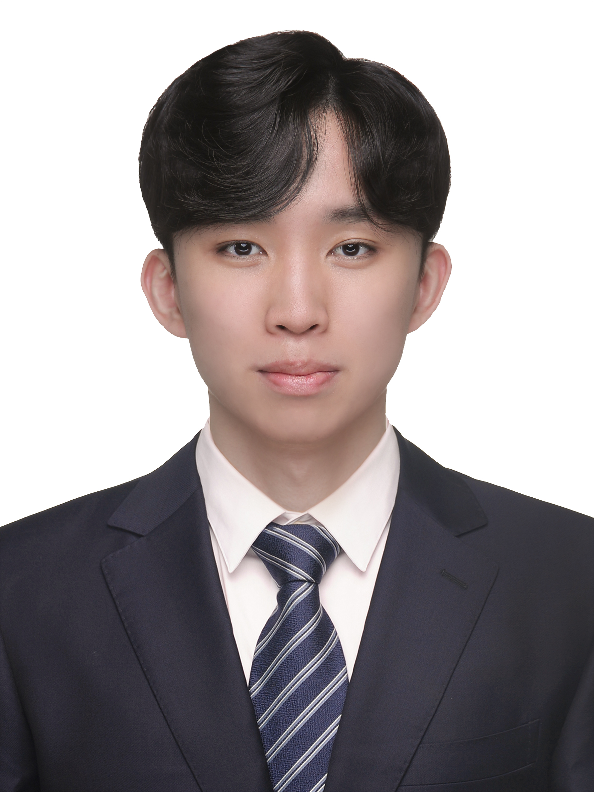
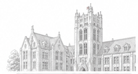

Kyo-Cheol Kang
M.S./Ph.D. Integrated Student
Department of Micro/Nano Systems, Korea University
Advisor: Prof. Byeong-Kwon Ju
+82-10-9052-3240
kgc430@korea.ac.kr
Seoul, Korea
Korean Native | English Fluent | Japanese Fluent

Research Focus
My research focuses on OLEDs, light extraction and photonic structure engineering, microcavity and multilayer thin-film optics, nanostructured surfaces, and computational electromagnetic modeling.
Selected Publications
-
Enhancing Optical Efficiency and Viewing Angle Characteristics of TADF OLEDs via inverted TiO₂ Nanoparticle-Embedded PDMS Substrates
K.C. Kang†, J.C. Bi†, J.Y. Park, H.S. Hwang, H. Lim, J. Kil, J.H. Kwon, Y.W. Park*, B.K. Ju*
Advanced Functional Materials, Feb. 2026, Revision IF: — -
Improving Efficiency and Color Purity of Blue Top-Emitting OLEDs: Distributed Bragg Reflectors for Surface Plasmon Polariton Suppression and Cavity-Resonance Enhancement
J.Y. Park†, K.C. Kang†, J.S. Lee†, J.C. Bi, H.S. Hwang, J. Kil, J.H. Kwon, H. Lim, B.K. Ju*
ACS Applied Materials & Interfaces, Feb. 2026, Accepted IF: 8.5 -
Single-Chamber Deposited Multilayered Parylene Films with Enhanced Visibility and Substrate Adhesion for Protective Device Coating
S.Y. Baek†, Y. Choi†, H.B. Kim, K.C. Kang, Y.S. Lee, A. Raji, M.G. Jung, S.Y. Boo, W. Jung, J. Lee, J.H. Lee*, B.K. Ju*
Advanced Optical Materials, 2025, e01820 IF: 7.2 -
Enhancing efficiency of blue thermally activated delayed fluorescence organic light-emitting device using a high refractive index material-based light extraction layer
J.S. Lee, J.Y. Park, J.C. Bi, S. Park, J. Kil, K.C. Kang, S. Hwang, J.H. Kwon, J. Song, H. Lim, B.K. Ju*
Journal of Luminescence, 286, 121399, 2025 IF: 3.6 -
2D Hole-Arrayed Double-Anode Structure Exciting Surface Plasmon Polaritons for Enhancing Outcoupling Efficiency of Organic Light-Emitting Diodes on Silicon Wafers (OLEDoS)
E.D. Lim, J.Y. Park, Y. Ham, J. Kang, K.C. Kang, J.C. Bi, S. Park, J. Song, J.S. Lee, H. Lim, S.H. Shin, S.J. Kim, S.W. Han, B.K. Ju*
ACS Omega, 10, 16300–16308, 2025 IF: 4.4 -
TiO₂-Nanoparticle-Embedded Thin-Film Encapsulation for Blue Thermally Activated Delayed Fluorescence Top-Emitting Organic Light-Emitting Devices
J.C. Bi, J.Y. Park, S. Lee, S. Park, J. Song, J.S. Lee, K.C. Kang, K. Kim, D. Lim, Y.W. Park*, B.K. Ju*
ACS Applied Materials & Interfaces, 2025 IF: 8.5 -
Enhancement of Light Extraction Efficiency Using Wavy-Patterned PDMS Substrates
J.C. Bi†, K.C. Kang†, J.Y. Park, J. Song, J.S. Lee, H. Lim, Y.W. Park*, B.K. Ju*
Nanomaterials, 15(3), 198, 2025 IF: 4.4
† Co-first author * Corresponding author
International Conferences
- NANO KOREA 2024 — High refractive index light extraction layer
- NANO KOREA 2024 — PDMS substrate via oxygen plasma treatment
- IMID 2024 — Meta-surface reflection phase delay
- NANO KOREA 2025 — DBR reflector for high-efficiency TEOLEDs
- NANO KOREA 2025 — Multiple EML RGB stacked WOLEDs
- ICECCME 2025 — Corrugated PDMS for blue TADF OLEDs
Technical Skills & Techniques
Device Fabrication
Thermal evaporation, DC/RF sputtering, RIE, ICP-RIE, mask aligner, spin-coating, O₂ plasma, wire-bonding
Characterization
J–V–L, EQE, angular emission, SEM, TEM, AFM, XPS, UPS, UV–Vis, transient EL, impedance measurement
Simulation & Modeling
Ansys Lumerical FDTD, TMM, optical design, MATLAB, Python, C++, ImageJ, statistical modeling
Materials & Processing
OLEDs, TADF devices, thin-film encapsulation, nanostructured PDMS, parylene, DBR, multilayer thin films